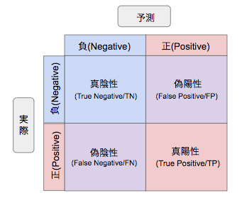
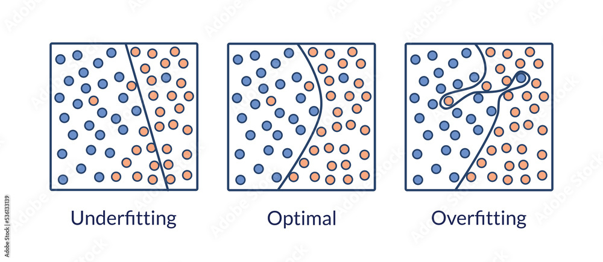
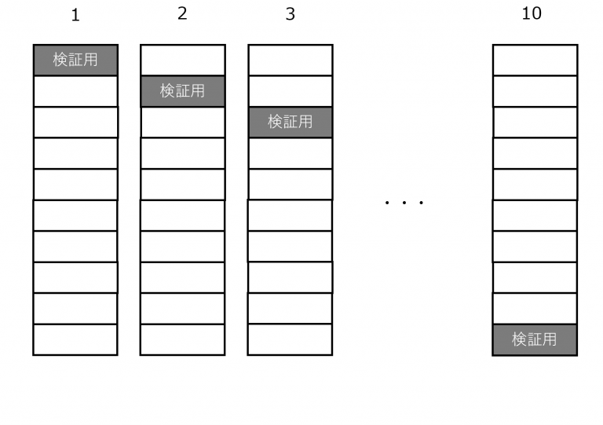
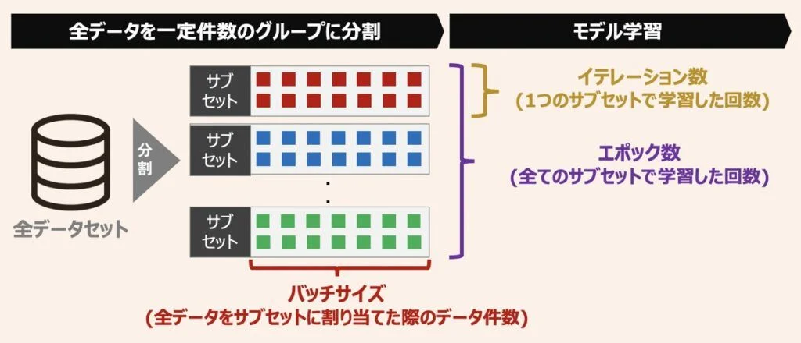
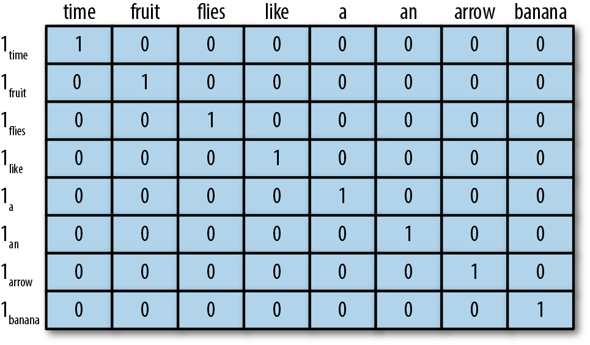

機械学習の基本概念
Contents
機械学習の基本概念#
教師あり学習#
機械学習は、コンピュータが大量のデータを学習することで、データの中に潜むパターンと規則性を抽出する技術です。ここで、「学習」は、観察されたデータをモデルに適合させるための調整可能な「パラメータ」を与えるために行われます。
機械学習は「教師あり学習」や「教師なし学習」、「強化学習」などの枠組が存在します。ここでは、教師あり学習に注目します。
教師あり学習（Supervised Learning）では、入力データ（特徴量）とそれに対応する正解ラベル（目標値）のペアを使用してモデルを訓練します。
モデルは、入力データと正解ラベルの間の関係やパターンを学習し、未知の入力データに対して正しい予測や分類を行うことが期待されます。テキスト分類、構文解析、機械通訳などの様々な自然言語処理タスクは、教師あり学習の問題として定式化できます。
教師データで学習した入出力の関係性がラベルを持たない未知の入力データにも使えるような関係性である必要があります。このように未知のデータにも対応できる性質を 汎用性 と言います。
高い推定精度を持ちかつ汎用性の高い関係性を見つけるのは教師あり学習の目的になります。
機械学習のデータ構造#
学習データ、検証データとテストデータ#
教師あり学習ではデータセットを「学習データ」、「検証データ」、「テストデータ」の3つに分けて使うのが一般的です。
学習データ（Training Data）:モデルのパラメータを調整するために使用されます。学習データから、モデルがデータのパターンや関連性を「学び」ます。
検証データ（Validation Data）: 検証データを使用してモデルの性能を評価し、その結果に基づいてハイパーパラメータを調整することができます。
テストデータ（Test Data）: このデータセットは、学習や検証のプロセスには一切使用されず、モデルの最終的な性能を評価するためだけに使用されます。テストデータを使用してモデルの性能を評価することで、実際の未知のデータに対するモデルの予測性能を推定することができます。
学習データの投入方法#
バッチ学習: 全ての学習データを利用して学習する手法です。つまり、バッチサイズはトレーニングデータの全サンプル数と等しくなります。この方法の利点は、計算が効率的であることですが、大量のメモリが必要になることや局所的な最適解にトラップされやすいという欠点もあります。
オンライン学習:ひとつひとつの学習データごとに学習処理を行います。具体的には、n個の学習データ\(x_1、x_2、…、x_n\)からランダムに1つの学習データ\(x_i\)を抽出し、その1つのデータをモデルに投入します。オンライン学習は一件ずつの計算処理を採用しているため、常に更新される最新データ情報も柔軟に取り入れることができます。一方で、パラメータの更新をデータ一件ごとに行うので、学習を安定させることが難しいのもオンライン学習の懸念点です。
ミニバッチ学習: バッチ学習とオンライン学習の中間のような学習手法であり、データをミニバッチという小さなグループに分割してモデルを学習します。バッチ学習は、計算効率とメモリの使用のバランスが良いこと、および学習の収束速度が適切であるため、一般的に最も使用される方法です。
ミニバッチ学習#
機械学習モデルの評価指標#
機械学習のモデルが良いか悪いかを評価するための評価基準は「評価指標」と言います。
回帰タスク評価指標#
\(y_i\)は\(i\)個目サンプルの真の値、\(p_i\)は\(i\)個目サンプルの予測値とすると、
MAE（Mean Absolute Error）:平均絶対誤差
RMSE（Root Mean Squared Error）: 平均二乗誤差平方根
分類タスク評価指標#
分類タスクの評価指標は、よくある二分類タスクで説明します。分類の実際値と予測値は下記の４種類があります。

TP：True Positive 真陽性
FN：False Negative 偽陰性
FP：False Positive 偽陽性
TN：True Negative 真陰性
正解率（Accuracy）#
正解率は、正や負と予測したデータのうち、実際にそうであるものの割合です。
適合率（Precision）#
適合率は、正と予測したデータのうち，実際に正であるものの割合です。
再現率（Recall）#
再現率は、実際に正であるもののうち，正であると予測されたものの割合です。
F-1値（F-1 score）#
F値は、再現率と適合率の調和平均です。
過学習#
過学習(Overfitting)とは、データの傾向に沿うようにモデルを学習させた結果、学習時のデータに対してはよい精度を出すが、未知データに対しては同様の精度を出せないモデルが構築されてしまうことです。

過学習を防ぐための一つの方法としては、交差検証法を使うことです。
交差検証とは、1つのデータを訓練データと検証データに分けるときに複数の分け方をして平均をとるという方法です。 データの分け方を複数作ることでリスクを分散し、訓練データと検証データの傾向の違いにより生じる過学習を最小化します。
最もよく使われるK-交差検証では、
全体データをK個にデータを分割します。
A～Kまであるうち、最初にAを検証データにしてB～Kのデータから予測モデルを作成。
Bを検証データにしてAとC～Kのデータから予測モデルを作成という流れで順番にK回検証していきます. 
機械学習のハイパーパラメータ#
機械学習のハイパーパラメータは、学習アルゴリズムの動作を制御するためのパラメータです。
これらのハイパーパラメータは、モデルの学習プロセスの前に設定され、学習中には通常変わりません。ハイパーパラメータの設定に応じてモデルの精度やパフォーマンスが大きく変わることがあります。
ここでは、多くの機械学習・深層学習モデルに共通しているくつかのハイパーパラメータを紹介します。
エポック(epoch)数#
機械学習・深層学習ようにパラメータの数が多いものになると、訓練データを何回も繰り返する必要があります。エポック数とは、学習において、データセットを何週繰り返してパラメータを調整するかを表す数を指します。1エポックは、トレーニングデータセット全体が一度、モデルを通過することを意味します。
例えば、データ件数が\(1000\)件で、バッチサイズが\(100\)なら、\(10\)回繰り返すと、\(1000件\)のデータに相当する件数分処理したことになります。この１単位のことを「エポック」と呼びます。
一般的には、エポック数が増えるほどモデルは訓練データに適応しやすくなります。しかし、エポック数が大きすぎると過学習のリスクが高まります。適切なエポック数を選ぶことで、モデルの性能を最大限引き出すことができます。
イテレーション (Iteration)#
イテレーション数はデータセットに含まれるデータが少なくとも1回は学習に用いられるのに必要な学習回数であり、バッチサイズが決まれば自動的に決まる数値です。先程の\(1000\)件のデータセットを\(100\)件ずつのサブセットに分ける場合では、イテレーション数は\(10\)となります。

学習率(Learning Rate)#
学習率とは、機械学習の最適化において、重みパラメータを一度にどの程度変化させるかを表すハイパーパラメータのことです。
機械学習とは、反復的に重みパラメータを変更していきますが、学習率の値が高いほど一度に変更する重みパラメータの大きさが大きくなるので学習のスピードは上がり、反対に低ければ学習のスピードは下がります。

特徴量表現#
機械学習では、実数値を要素とするベクトルで入力を表現することが多いです。適切な特徴(feature)を生データから作成すること、機械学習モデル性能も向上につながります。
テキストデータもベクトク化する必要があります。
n-gramベクトル#
n-gramは、テキストデータやシーケンスデータの連続するN個のアイテム（文字、単語など）を指す言葉です。特に\(n=1\)の場合をuni-gram, \(n=2\)の場合をbi-gramと呼びます。
例えば、I love machine learningという文をn-gramで表現してみます。\(n=1\)の場合は["I", "love", "machine", "learning"]、\(n=2\)の場合は["I love", "love machine", "machine learning"]、\(n=3\)の場合は["I love machine", "love machine learning"]のようにテキストを表現できます。
抽出されたN-gramを一意なものとしてリストアップし、各n-gramに対して重複のないように数値を割り当てます。これを語彙(vocabulary)と呼びます。
次に、 テキストごとに、語彙に含まれるN-gramの出現頻度や存在をベクトルとして表現します。
Note
n-gramでは、ある程度にローカルな情報、文の構造や単語の順序を考慮することができます。一方、語彙のサイズが大きくなると、スパースなベクトルが生成され、計算コストが高くになるなどの欠点もあります。そのため、N-gramベクトルはある意味で「古典的な」特徴量表現になります。現在のNLPの分野では、埋め込みベクトルや事前学習済みモデルを使用する手法が主流になっています。
one-hotエンコーディング#
one-hotエンコーディングでは、ある単語がテキストに存在するかどうかでベクトルを作成します。具体的には、
語彙（ユニークな単語のリスト）を作成する。
この語彙のサイズをベクトルの長さとし、各単語が語彙のどの位置に存在するかに応じて1の値を持つベクトルを生成する。
例えば、以下の語彙に基づいて、“like a banana”のone-hotエンコーディング結果は[0, 0, 0, 1, 1, 0, 0, 1]

tf-idf#
tf-idfとは、「ある文書内」で「ある単語」が「どれくらい多い頻度で出現するか」を表すtf（term frequency：単語頻度）値と、「全文書中」で「ある単語を含む文書」が「（逆に）どれくらい少ない頻度で存在するか」を表すidf（inverse document frequency：逆文書頻度）値を掛け合わせた値のことです。
Term Frequency (TF): 特定の文書内の単語の出現頻度を表します。
Inverse Document Frequency (IDF): コーパス全体において、特定の単語がどれほど珍しいかを評価する指標です。
要するには、tf-idfの基本的な考え方は、ある単語が多くの文書に出現するなら、その単語は一般的に重要でないと考えられます。例えば、ある文書で「の」の出現頻度は高いが、同時に多くの文書に出現すると重要性が小さくなります。
Note
ここまでテキストベクトル化の手法を説明しましたが、実に、これらの手法では単語の意味や関係をうまく捉えない、大規模のテキストデータに対応できない、汎用性は低いなどの欠点が挙げられます。これらの制約を克服するため、現在のNLPの分野では、埋め込みベクトルや事前学習済みモデルを使用する手法が主流になっています。
Note
モデル：入力データから出力を予測するための数学的表現やアルゴリズムです。例として、線形回帰、決定木、ニューラルネットワークなどが挙げられます。
ハイパーパラメータ：モデルの学習プロセスを制御するための外部から設定されるパラメータです。ハイパーパラメータは学習データから自動的に学習されるものではなく、手動で設定されるか、ハイパーパラメータチューニングの技法を用いて最適な値を探索します。例えば、学習率、バッチサイズ、エポック数、ドロップアウト率のこと．この数値で決められたモデルの構造に従って学習は進められます。
重み：重みは、モデルの学習プロセス中にデータから自動的に調整・学習される内部パラメータです。重みは、入力特徴との関係性を学習し、最終的な予測を形成するのに役立ちます。一般的には、重みは、モデルの出力を調整して、実際のターゲットとの差を最小化することを目指します。学習はこの重みを試行錯誤して決めていく作業になります．